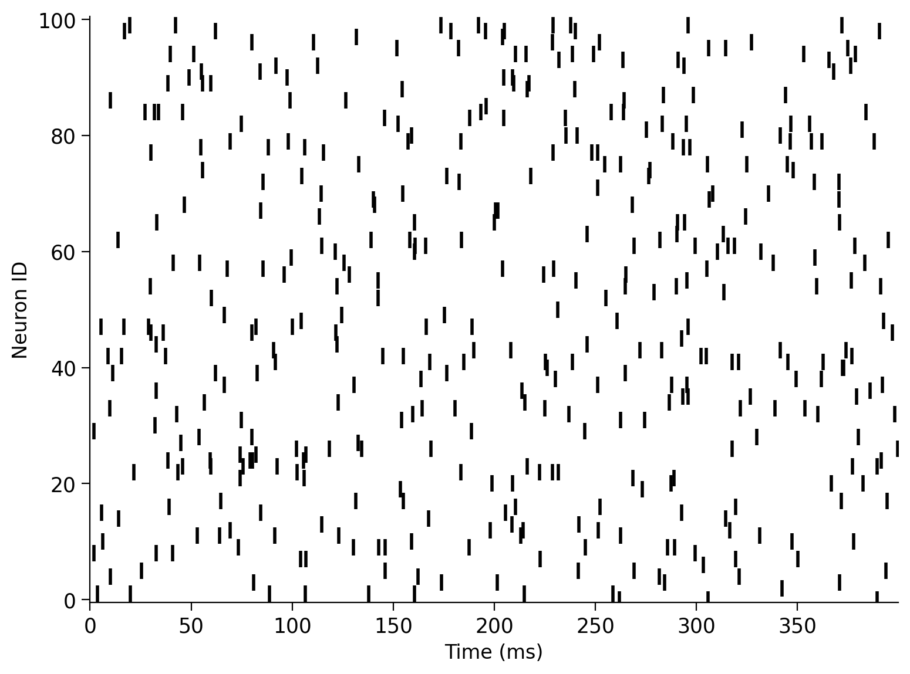

Tutorial 2: Effects of Input Correlation#
Week 2, Day 4: Biological Neuron Models
By Neuromatch Academy
Content creators: Qinglong Gu, Songtin Li, John Murray, Richard Naud, Arvind Kumar
Content reviewers: Maryam Vaziri-Pashkam, Ella Batty, Lorenzo Fontolan, Richard Gao, Matthew Krause, Spiros Chavlis, Michael Waskom
Post-Production team: Gagana B, Spiros Chavlis
Tutorial Objectives#
Estimated timing of tutorial: 50 minutes
In this tutorial, we will use the leaky integrate-and-fire (LIF) neuron model (see Tutorial 1) to study how they transform input correlations to output properties (transfer of correlations). In particular, we are going to write a few lines of code to:
inject correlated GWN in a pair of neurons
measure correlations between the spiking activity of the two neurons
study how the transfer of correlation depends on the statistics of the input, i.e. mean and standard deviation.
Setup#
Install and import feedback gadget#
Show code cell source
# @title Install and import feedback gadget
!pip3 install vibecheck datatops --quiet
from vibecheck import DatatopsContentReviewContainer
def content_review(notebook_section: str):
return DatatopsContentReviewContainer(
"", # No text prompt
notebook_section,
{
"url": "https://pmyvdlilci.execute-api.us-east-1.amazonaws.com/klab",
"name": "neuromatch_cn",
"user_key": "y1x3mpx5",
},
).render()
feedback_prefix = "W2D3_T2"
# Imports
import matplotlib.pyplot as plt
import numpy as np
import time
Figure Settings#
Show code cell source
# @title Figure Settings
import logging
logging.getLogger('matplotlib.font_manager').disabled = True
import ipywidgets as widgets # interactive display
%config InlineBackend.figure_format = 'retina'
# use NMA plot style
plt.style.use("https://raw.githubusercontent.com/NeuromatchAcademy/course-content/main/nma.mplstyle")
my_layout = widgets.Layout()
Plotting Functions#
Show code cell source
# @title Plotting Functions
def example_plot_myCC():
pars = default_pars(T=50000, dt=.1)
c = np.arange(10) * 0.1
r12 = np.zeros(10)
for i in range(10):
I1gL, I2gL = correlate_input(pars, mu=20.0, sig=7.5, c=c[i])
r12[i] = my_CC(I1gL, I2gL)
plt.figure()
plt.plot(c, r12, 'bo', alpha=0.7, label='Simulation', zorder=2)
plt.plot([-0.05, 0.95], [-0.05, 0.95], 'k--', label='y=x',
dashes=(2, 2), zorder=1)
plt.xlabel('True CC')
plt.ylabel('Sample CC')
plt.legend(loc='best')
plt.show()
def my_raster_Poisson(range_t, spike_train, n):
"""
Ffunction generates and plots the raster of the Poisson spike train
Args:
range_t : time sequence
spike_train : binary spike trains, with shape (N, Lt)
n : number of Poisson trains plot
Returns:
Raster plot of the spike train
"""
# find the number of all the spike trains
N = spike_train.shape[0]
# n should smaller than N:
if n > N:
print('The number n exceeds the size of spike trains')
print('The number n is set to be the size of spike trains')
n = N
# plot rater
plt.figure()
i = 0
while i < n:
if spike_train[i, :].sum() > 0.:
t_sp = range_t[spike_train[i, :] > 0.5] # spike times
plt.plot(t_sp, i * np.ones(len(t_sp)), 'k|', ms=10, markeredgewidth=2)
i += 1
plt.xlim([range_t[0], range_t[-1]])
plt.ylim([-0.5, n + 0.5])
plt.xlabel('Time (ms)', fontsize=12)
plt.ylabel('Neuron ID', fontsize=12)
plt.show()
def plot_c_r_LIF(c, r, mycolor, mylabel):
z = np.polyfit(c, r, deg=1)
c_range = np.array([c.min() - 0.05, c.max() + 0.05])
plt.plot(c, r, 'o', color=mycolor, alpha=0.7, label=mylabel, zorder=2)
plt.plot(c_range, z[0] * c_range + z[1], color=mycolor, zorder=1)
Helper Functions#
Show code cell source
# @title Helper Functions
def default_pars(**kwargs):
pars = {}
### typical neuron parameters###
pars['V_th'] = -55. # spike threshold [mV]
pars['V_reset'] = -75. # reset potential [mV]
pars['tau_m'] = 10. # membrane time constant [ms]
pars['g_L'] = 10. # leak conductance [nS]
pars['V_init'] = -75. # initial potential [mV]
pars['V_L'] = -75. # leak reversal potential [mV]
pars['tref'] = 2. # refractory time (ms)
### simulation parameters ###
pars['T'] = 400. # Total duration of simulation [ms]
pars['dt'] = .1 # Simulation time step [ms]
### external parameters if any ###
for k in kwargs:
pars[k] = kwargs[k]
pars['range_t'] = np.arange(0, pars['T'], pars['dt']) # Vector of discretized
# time points [ms]
return pars
def run_LIF(pars, Iinj):
"""
Simulate the LIF dynamics with external input current
Args:
pars : parameter dictionary
Iinj : input current [pA]. The injected current here can be a value or an array
Returns:
rec_spikes : spike times
rec_v : mebrane potential
"""
# Set parameters
V_th, V_reset = pars['V_th'], pars['V_reset']
tau_m, g_L = pars['tau_m'], pars['g_L']
V_init, V_L = pars['V_init'], pars['V_L']
dt, range_t = pars['dt'], pars['range_t']
Lt = range_t.size
tref = pars['tref']
# Initialize voltage and current
v = np.zeros(Lt)
v[0] = V_init
Iinj = Iinj * np.ones(Lt)
tr = 0.
# simulate the LIF dynamics
rec_spikes = [] # record spike times
for it in range(Lt - 1):
if tr > 0:
v[it] = V_reset
tr = tr - 1
elif v[it] >= V_th: # reset voltage and record spike event
rec_spikes.append(it)
v[it] = V_reset
tr = tref / dt
# calculate the increment of the membrane potential
dv = (-(v[it] - V_L) + Iinj[it] / g_L) * (dt / tau_m)
# update the membrane potential
v[it + 1] = v[it] + dv
rec_spikes = np.array(rec_spikes) * dt
return v, rec_spikes
def my_GWN(pars, sig, myseed=False):
"""
Function that calculates Gaussian white noise inputs
Args:
pars : parameter dictionary
mu : noise baseline (mean)
sig : noise amplitute (standard deviation)
myseed : random seed. int or boolean
the same seed will give the same random number sequence
Returns:
I : Gaussian white noise input
"""
# Retrieve simulation parameters
dt, range_t = pars['dt'], pars['range_t']
Lt = range_t.size
# Set random seed. You can fix the seed of the random number generator so
# that the results are reliable however, when you want to generate multiple
# realization make sure that you change the seed for each new realization
if myseed:
np.random.seed(seed=myseed)
else:
np.random.seed()
# generate GWN
# we divide here by 1000 to convert units to sec.
I_GWN = sig * np.random.randn(Lt) * np.sqrt(pars['tau_m'] / dt)
return I_GWN
def LIF_output_cc(pars, mu, sig, c, bin_size, n_trials=20):
""" Simulates two LIF neurons with correlated input and computes output correlation
Args:
pars : parameter dictionary
mu : noise baseline (mean)
sig : noise amplitute (standard deviation)
c : correlation coefficient ~[0, 1]
bin_size : bin size used for time series
n_trials : total simulation trials
Returns:
r : output corr. coe.
sp_rate : spike rate
sp1 : spike times of neuron 1 in the last trial
sp2 : spike times of neuron 2 in the last trial
"""
r12 = np.zeros(n_trials)
sp_rate = np.zeros(n_trials)
for i_trial in range(n_trials):
I1gL, I2gL = correlate_input(pars, mu, sig, c)
_, sp1 = run_LIF(pars, pars['g_L'] * I1gL)
_, sp2 = run_LIF(pars, pars['g_L'] * I2gL)
my_bin = np.arange(0, pars['T'], bin_size)
sp1_count, _ = np.histogram(sp1, bins=my_bin)
sp2_count, _ = np.histogram(sp2, bins=my_bin)
r12[i_trial] = my_CC(sp1_count[::20], sp2_count[::20])
sp_rate[i_trial] = len(sp1) / pars['T'] * 1000.
return r12.mean(), sp_rate.mean(), sp1, sp2
The helper function contains the:
Parameter dictionary:
default_pars( **kwargs)from Tutorial 1LIF simulator:
run_LIFfrom Tutorial 1Gaussian white noise generator:
my_GWN(pars, sig, myseed=False)from Tutorial 1Poisson type spike train generator:
Poisson_generator(pars, rate, n, myseed=False)Two LIF neurons with correlated inputs simulator:
LIF_output_cc(pars, mu, sig, c, bin_size, n_trials=20)
Section 1: Correlations (Synchrony)#
Correlation or synchrony in neuronal activity can be described for any readout of brain activity. Here, we are concerned with the spiking activity of neurons.
In the simplest way, correlation/synchrony refers to coincident spiking of neurons, i.e., when two neurons spike together, they are firing in synchrony or are correlated. Neurons can be synchronous in their instantaneous activity, i.e., they spike together with some probability. However, it is also possible that spiking of a neuron at time \(t\) is correlated with the spikes of another neuron with a delay (time-delayed synchrony).
Origin of synchronous neuronal activity:#
Common inputs, i.e., two neurons are receiving input from the same sources. The degree of correlation of the shared inputs is proportional to their output correlation.
Pooling from the same sources. Neurons do not share the same input neurons but are receiving inputs from neurons which themselves are correlated.
Neurons are connected to each other (uni- or bi-directionally): This will only give rise to time-delayed synchrony. Neurons could also be connected via gap-junctions.
Neurons have similar parameters and initial conditions.
Implications of synchrony#
When neurons spike together, they can have a stronger impact on downstream neurons. Synapses in the brain are sensitive to the temporal correlations (i.e., delay) between pre- and postsynaptic activity, and this, in turn, can lead to the formation of functional neuronal networks - the basis of unsupervised learning (we will study some of these concepts in a forthcoming tutorial).
Synchrony implies a reduction in the dimensionality of the system. In addition, correlations, in many cases, can impair the decoding of neuronal activity.
Video 1: Input & output correlations#
Submit your feedback#
Show code cell source
# @title Submit your feedback
content_review(f"{feedback_prefix}_Input_and_Output_correlations_Video")
A simple model to study the emergence of correlations is to inject common inputs to a pair of neurons and measure the output correlation as a function of the fraction of common inputs.
Here, we are going to investigate the transfer of correlations by computing the correlation coefficient of spike trains recorded from two unconnected LIF neurons, which received correlated inputs.
The input current to LIF neuron \(i\) \((i=1,2)\) is:
where \(\mu_i\) is the temporal average of the current. The Gaussian white noise \(\xi_i\) is independent for each neuron, while \(\xi_c\) is common to all neurons. The variable \(c\) (\(0\le c\le1\)) controls the fraction of common and independent inputs. \(\sigma_i\) shows the variance of the total input.
So, first, we will generate correlated inputs.
Execute this cell to get a function correlate_input for generating correlated GWN inputs
Show code cell source
# @markdown Execute this cell to get a function `correlate_input` for generating correlated GWN inputs
def correlate_input(pars, mu=20., sig=7.5, c=0.3):
"""
Args:
pars : parameter dictionary
mu : noise baseline (mean)
sig : noise amplitute (standard deviation)
c. : correlation coefficient ~[0, 1]
Returns:
I1gL, I2gL : two correlated inputs with corr. coe. c
"""
# generate Gaussian whute noise xi_1, xi_2, xi_c
xi_1 = my_GWN(pars, sig)
xi_2 = my_GWN(pars, sig)
xi_c = my_GWN(pars, sig)
# Generate two correlated inputs by Equation. (1)
I1gL = mu + np.sqrt(1. - c) * xi_1 + np.sqrt(c) * xi_c
I2gL = mu + np.sqrt(1. - c) * xi_2 + np.sqrt(c) * xi_c
return I1gL, I2gL
help(correlate_input)
Help on function correlate_input in module __main__:
correlate_input(pars, mu=20.0, sig=7.5, c=0.3)
Args:
pars : parameter dictionary
mu : noise baseline (mean)
sig : noise amplitute (standard deviation)
c. : correlation coefficient ~[0, 1]
Returns:
I1gL, I2gL : two correlated inputs with corr. coe. c
Coding Exercise 1A: Compute the correlation#
The sample correlation coefficient between two input currents \(I_i\) and \(I_j\) is defined as the sample covariance of \(I_i\) and \(I_j\) divided by the square root of the sample variance of \(I_i\) multiplied with the square root of the sample variance of \(I_j\). In equation form:
where \(\bar{I_i}\) is the sample mean, \(k\) is the time bin, and \(L\) is the length of \(I\). This means that \(I_i^k\) is current \(i\) at time \(k\cdot dt\).
Important note: The equations above are not accurate for sample covariances and variances as they should be additionally divided by \(L-1\). We have dropped this term because it cancels out in the sample correlation coefficient formula.
The sample correlation coefficient may also be referred to as the sample Pearson correlation coefficient. Here, is a beautiful paper that explains multiple ways to calculate and understand correlations Rodgers and Nicewander 1988.
In this exercise, we will create a function, my_CC to compute the sample correlation coefficient between two time series. Note that while we introduced this computation here in the context of input currents, the sample correlation coefficient is used to compute the correlation between any two time series - we will use it later on binned spike trains.
We then check our method is accurate by generating currents with a certain correlation (using correlate_input), computing the correlation coefficient using my_CC, and plotting the true vs sample correlation coefficients.
def my_CC(i, j):
"""
Args:
i, j : two time series with the same length
Returns:
rij : correlation coefficient
"""
########################################################################
## TODO for students: compute rxy, then remove the NotImplementedError #
# Tip1: array([a1, a2, a3])*array([b1, b2, b3]) = array([a1*b1, a2*b2, a3*b3])
# Tip2: np.sum(array([a1, a2, a3])) = a1+a2+a3
# Tip3: square root, np.sqrt()
# Fill out function and remove
raise NotImplementedError("Student exercise: compute the sample correlation coefficient")
########################################################################
# Calculate the covariance of i and j
cov = ...
# Calculate the variance of i
var_i = ...
# Calculate the variance of j
var_j = ...
# Calculate the correlation coefficient
rij = ...
return rij
example_plot_myCC()
Example output:

Submit your feedback#
Show code cell source
# @title Submit your feedback
content_review(f"{feedback_prefix}_Compute_the_correlation_Exercise")
The sample correlation coefficients (computed using my_CC) match the ground truth correlation coefficient!
In the next exercise, we will use the Poisson distribution to model spike trains. Remember that you have seen the Poisson distribution used in this way in the pre-reqs math day on Statistics. Remember that a Poisson spike train has the following properties:
The ratio of the mean and variance of spike count is 1
Inter-spike-intervals are exponentially distributed
Spike times are irregular i.e. 𝐶𝑉ISI=1
Adjacent spike intervals are independent of each other.
In the following cell, we provide a helper function Poisson_generator and then use it to produce a Poisson spike train.
Execute this cell to get helper function Poisson_generator
Show code cell source
# @markdown Execute this cell to get helper function `Poisson_generator`
def Poisson_generator(pars, rate, n, myseed=False):
"""
Generates poisson trains
Args:
pars : parameter dictionary
rate : noise amplitute [Hz]
n : number of Poisson trains
myseed : random seed. int or boolean
Returns:
pre_spike_train : spike train matrix, ith row represents whether
there is a spike in ith spike train over time
(1 if spike, 0 otherwise)
"""
# Retrieve simulation parameters
dt, range_t = pars['dt'], pars['range_t']
Lt = range_t.size
# set random seed
if myseed:
np.random.seed(seed=myseed)
else:
np.random.seed()
# generate uniformly distributed random variables
u_rand = np.random.rand(n, Lt)
# generate Poisson train
poisson_train = 1. * (u_rand < rate * (dt / 1000.))
return poisson_train
help(Poisson_generator)
Help on function Poisson_generator in module __main__:
Poisson_generator(pars, rate, n, myseed=False)
Generates poisson trains
Args:
pars : parameter dictionary
rate : noise amplitute [Hz]
n : number of Poisson trains
myseed : random seed. int or boolean
Returns:
pre_spike_train : spike train matrix, ith row represents whether
there is a spike in ith spike train over time
(1 if spike, 0 otherwise)
Execute this cell to visualize Poisson spike train
Show code cell source
# @markdown Execute this cell to visualize Poisson spike train
pars = default_pars()
pre_spike_train = Poisson_generator(pars, rate=10, n=100, myseed=2020)
my_raster_Poisson(pars['range_t'], pre_spike_train, 100)

Coding Exercise 1B: Measure the correlation between spike trains#
After recording the spike times of the two neurons, how can we estimate their correlation coefficient?
In order to find this, we need to bin the spike times and obtain two time series. Each data point in the time series is the number of spikes in the corresponding time bin. You can use np.histogram() to bin the spike times.
Complete the code below to bin the spike times and calculate the correlation coefficient for two Poisson spike trains. Note that c here is the ground-truth correlation coefficient that we define.
Execute this cell to get a function for generating correlated Poisson inputs (generate_corr_Poisson)
Show code cell source
# @markdown Execute this cell to get a function for generating correlated Poisson inputs (`generate_corr_Poisson`)
def generate_corr_Poisson(pars, poi_rate, c, myseed=False):
"""
function to generate correlated Poisson type spike trains
Args:
pars : parameter dictionary
poi_rate : rate of the Poisson train
c. : correlation coefficient ~[0, 1]
Returns:
sp1, sp2 : two correlated spike time trains with corr. coe. c
"""
range_t = pars['range_t']
mother_rate = poi_rate / c
mother_spike_train = Poisson_generator(pars, rate=mother_rate,
n=1, myseed=myseed)[0]
sp_mother = range_t[mother_spike_train > 0]
L_sp_mother = len(sp_mother)
sp_mother_id = np.arange(L_sp_mother)
L_sp_corr = int(L_sp_mother * c)
np.random.shuffle(sp_mother_id)
sp1 = np.sort(sp_mother[sp_mother_id[:L_sp_corr]])
np.random.shuffle(sp_mother_id)
sp2 = np.sort(sp_mother[sp_mother_id[:L_sp_corr]])
return sp1, sp2
print(help(generate_corr_Poisson))
Help on function generate_corr_Poisson in module __main__:
generate_corr_Poisson(pars, poi_rate, c, myseed=False)
function to generate correlated Poisson type spike trains
Args:
pars : parameter dictionary
poi_rate : rate of the Poisson train
c. : correlation coefficient ~[0, 1]
Returns:
sp1, sp2 : two correlated spike time trains with corr. coe. c
None
def corr_coeff_pairs(pars, rate, c, trials, bins):
"""
Calculate the correlation coefficient of two spike trains, for different
realizations
Args:
pars : parameter dictionary
rate : rate of poisson inputs
c : correlation coefficient ~ [0, 1]
trials : number of realizations
bins : vector with bins for time discretization
Returns:
r12 : correlation coefficient of a pair of inputs
"""
r12 = np.zeros(trials)
for i in range(trials):
##############################################################
## TODO for students
# Note that you can run multiple realizations and compute their r_12(diff_trials)
# with the defined function above. The average r_12 over trials can get close to c.
# Note: change seed to generate different input per trial
# Fill out function and remove
raise NotImplementedError("Student exercise: compute the correlation coefficient")
##############################################################
# Generate correlated Poisson inputs
sp1, sp2 = generate_corr_Poisson(pars, ..., ..., myseed=2020+i)
# Bin the spike times of the first input
sp1_count, _ = np.histogram(..., bins=...)
# Bin the spike times of the second input
sp2_count, _ = np.histogram(..., bins=...)
# Calculate the correlation coefficient
r12[i] = my_CC(..., ...)
return r12
poi_rate = 20.
c = 0.2 # set true correlation
pars = default_pars(T=10000)
# bin the spike time
bin_size = 20 # [ms]
my_bin = np.arange(0, pars['T'], bin_size)
n_trials = 100 # 100 realizations
r12 = corr_coeff_pairs(pars, rate=poi_rate, c=c, trials=n_trials, bins=my_bin)
print(f'True corr coe = {c:.3f}')
print(f'Simu corr coe = {r12.mean():.3f}')
Sample output
True corr coe = 0.200
Simu corr coe = 0.197
Submit your feedback#
Show code cell source
# @title Submit your feedback
content_review(f"{feedback_prefix}_Measure_the_correlation_between_spike_trains_Exercise")
Section 2: Investigate the effect of input correlation on the output correlation#
Estimated timing to here from start of tutorial: 20 min
Now let’s combine the aforementioned two procedures. We first generate the correlated inputs. Then we inject the correlated inputs \(I_1, I_2\) into a pair of neurons and record their output spike times. We continue measuring the correlation between the output and investigate the relationship between the input correlation and the output correlation.
In the following, you will inject correlated GWN in two neurons. You need to define the mean (gwn_mean), standard deviation (gwn_std), and input correlations (c_in).
We will simulate \(10\) trials to get a better estimate of the output correlation. Change the values in the following cell for the above variables (and then run the next cell) to explore how they impact the output correlation.
# Play around with these parameters
pars = default_pars(T=80000, dt=1.) # get the parameters
c_in = 0.3 # set input correlation value
gwn_mean = 10.
gwn_std = 10.
Do not forget to execute this cell to simulate the LIF
Show code cell source
# @markdown Do not forget to execute this cell to simulate the LIF
bin_size = 10. # ms
starttime = time.perf_counter() # time clock
r12_ss, sp_ss, sp1, sp2 = LIF_output_cc(pars, mu=gwn_mean, sig=gwn_std, c=c_in,
bin_size=bin_size, n_trials=10)
# just the time counter
endtime = time.perf_counter()
timecost = (endtime - starttime) / 60.
print(f"Simulation time = {timecost:.2f} min")
print(f"Input correlation = {c_in}")
print(f"Output correlation = {r12_ss}")
plt.figure(figsize=(12, 6))
plt.plot(sp1, np.ones(len(sp1)) * 1, '|', ms=20, label='neuron 1')
plt.plot(sp2, np.ones(len(sp2)) * 1.1, '|', ms=20, label='neuron 2')
plt.xlabel('time (ms)')
plt.ylabel('neuron id.')
plt.xlim(1000, 8000)
plt.ylim(0.9, 1.2)
plt.legend()
plt.show()
Think! 2: Input and Output Correlations#
Is the output correlation always smaller than the input correlation? If yes, why?
Should there be a systematic relationship between input and output correlations?
You will explore these questions in the next figure but try to develop your own intuitions first!
Let’s vary c_in and plot the relationship between the c_in and output correlation. This might take some time depending on the number of trials.
Don’t forget to execute this cell!
Show code cell source
# @markdown Don't forget to execute this cell!
pars = default_pars(T=80000, dt=1.) # get the parameters
bin_size = 10.
c_in = np.arange(0, 1.0, 0.1) # set the range for input CC
r12_ss = np.zeros(len(c_in)) # small mu, small sigma
starttime = time.perf_counter() # time clock
for ic in range(len(c_in)):
r12_ss[ic], sp_ss, sp1, sp2 = LIF_output_cc(pars, mu=10.0, sig=10.,
c=c_in[ic], bin_size=bin_size,
n_trials=10)
endtime = time.perf_counter()
timecost = (endtime - starttime) / 60.
print(f"Simulation time = {timecost:.2f} min")
plot_c_r_LIF(c_in, r12_ss, mycolor='b', mylabel='Output CC')
plt.plot([c_in.min() - 0.05, c_in.max() + 0.05],
[c_in.min() - 0.05, c_in.max() + 0.05],
'k--', dashes=(2, 2), label='y=x')
plt.xlabel('Input CC')
plt.ylabel('Output CC')
plt.legend(loc='best', fontsize=16)
plt.show()
Submit your feedback#
Show code cell source
# @title Submit your feedback
content_review(f"{feedback_prefix}_Input_Output_correlation_Discussion")
Section 3: Correlation transfer function#
Estimated timing to here from start of tutorial: 30 min
The above plot of input correlation vs. output correlation is called the correlation transfer function of the neurons.
Section 3.1: How do the mean and standard deviation of the Gaussian white noise (GWN) affect the correlation transfer function?#
The correlations transfer function appears to be linear. The above can be taken as the input/output transfer function of LIF neurons for correlations, instead of the transfer function for input/output firing rates as we had discussed in the previous tutorial (i.e., F-I curve).
What would you expect to happen to the slope of the correlation transfer function if you vary the mean and/or the standard deviation of the GWN of the inputs ?
Execute this cell to visualize correlation transfer functions
Show code cell source
# @markdown Execute this cell to visualize correlation transfer functions
pars = default_pars(T=80000, dt=1.) # get the parameters
n_trials = 10
bin_size = 10.
c_in = np.arange(0., 1., 0.2) # set the range for input CC
r12_ss = np.zeros(len(c_in)) # small mu, small sigma
r12_ls = np.zeros(len(c_in)) # large mu, small sigma
r12_sl = np.zeros(len(c_in)) # small mu, large sigma
starttime = time.perf_counter() # time clock
for ic in range(len(c_in)):
r12_ss[ic], sp_ss, sp1, sp2 = LIF_output_cc(pars, mu=10.0, sig=10.,
c=c_in[ic], bin_size=bin_size,
n_trials=n_trials)
r12_ls[ic], sp_ls, sp1, sp2 = LIF_output_cc(pars, mu=18.0, sig=10.,
c=c_in[ic], bin_size=bin_size,
n_trials=n_trials)
r12_sl[ic], sp_sl, sp1, sp2 = LIF_output_cc(pars, mu=10.0, sig=20.,
c=c_in[ic], bin_size=bin_size,
n_trials=n_trials)
endtime = time.perf_counter()
timecost = (endtime - starttime) / 60.
print(f"Simulation time = {timecost:.2f} min")
plot_c_r_LIF(c_in, r12_ss, mycolor='b', mylabel=r'Small $\mu$, small $\sigma$')
plot_c_r_LIF(c_in, r12_ls, mycolor='y', mylabel=r'Large $\mu$, small $\sigma$')
plot_c_r_LIF(c_in, r12_sl, mycolor='r', mylabel=r'Small $\mu$, large $\sigma$')
plt.plot([c_in.min() - 0.05, c_in.max() + 0.05],
[c_in.min() - 0.05, c_in.max() + 0.05],
'k--', dashes=(2, 2), label='y=x')
plt.xlabel('Input CC')
plt.ylabel('Output CC')
plt.legend(loc='best', fontsize=14)
plt.show()
Think! 3.1: GWN and the Correlation Transfer Function#
Why do both the mean and the standard deviation of the GWN affect the slope of the correlation transfer function?
Submit your feedback#
Show code cell source
# @title Submit your feedback
content_review(f"{feedback_prefix}_GWN_and_the_Correlation_Transfer_Function_Discussion")
Section 3.2: What is the rationale behind varying \(\mu\) and \(\sigma\)?#
The mean and the variance of the synaptic current depends on the spike rate of a Poisson process. We can use something called Campbell’s theorem to estimate the mean and the variance of the synaptic current:
where \(\lambda\) is the firing rate of the Poisson input, \(J\) the amplitude of the postsynaptic current and \(P(t)\) is the shape of the postsynaptic current as a function of time.
Therefore, when we varied \(\mu\) and/or \(\sigma\) of the GWN, we mimicked a change in the input firing rate. Note that, if we change the firing rate, both \(\mu\) and \(\sigma\) will change simultaneously, not independently.
Here, since we observe an effect of \(\mu\) and \(\sigma\) on correlation transfer, this implies that the input rate has an impact on the correlation transfer function.
Think!: Correlations and Network Activity#
What are the factors that would make output correlations smaller than input correlations? (Notice that the colored lines are below the black dashed line)
What does the fact that output correlations are smaller mean for the correlations throughout a network?
Here we have studied the transfer of correlations by injecting GWN. But in the previous tutorial, we mentioned that GWN is unphysiological. Indeed, neurons receive colored noise (i.e., Shot noise or OU process). How do these results obtained from injection of GWN apply to the case where correlated spiking inputs are injected in the two LIFs? Will the results be the same or different?
References:
de la Rocha J, Doiron B, Shea-Brown E, Josić K, Reyes A (2007). Correlation between neural spike trains increases with firing rate. Nature 448:802-806. doi: 10.1038/nature06028
Bujan AF, Aertsen A, Kumar A (2015). Role of input correlations in shaping the variability and noise correlations of evoked activity in the neocortex, Journal of Neuroscience 35(22):8611-25. doi: 10.1523/JNEUROSCI.4536-14.2015
Submit your feedback#
Show code cell source
# @title Submit your feedback
content_review(f"{feedback_prefix}_Correlations_and_Network_Activity_Discussion")
Summary#
Estimated timing of tutorial: 50 minutes
In this tutorial, we studied how the input correlation of two LIF neurons is mapped to their output correlation. Specifically, we:
injected correlated GWN in a pair of neurons,
measured correlations between the spiking activity of the two neurons, and
studied how the transfer of correlation depends on the statistics of the input, i.e., mean and standard deviation.
Here, we were concerned with zero time lag correlation. For this reason, we restricted estimation of correlation to instantaneous correlations. If you are interested in time-lagged correlation, then we should estimate the cross-correlogram of the spike trains and find out the dominant peak and area under the peak to get an estimate of output correlations.
We leave this as a future to-do for you if you are interested.
If you have time, check out the bonus video to think about responses of ensembles of neurons to time-varying input.
Bonus#
Bonus Section 1: Ensemble Response#
Finally, there is a short BONUS lecture video on the firing response of an ensemble of neurons to time-varying input. There are no associated coding exercises - just enjoy.
Video 2: Response of ensemble of neurons to time-varying input#
Submit your feedback#
Show code cell source
# @title Submit your feedback
content_review(f"{feedback_prefix}_ Response_of_ensemble_of_neurons_to_time_varying_input_Bonus_Video")